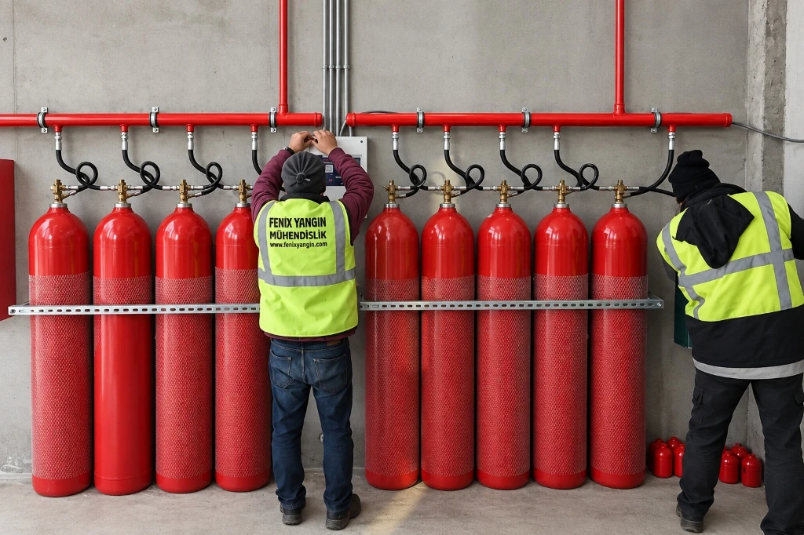

Server Odası ve Veri Merkezleri İçin Gazlı Yangın Söndürme Sistemi Maliyeti: Fiyatı Belirleyen Faktörler
Bir sistem odası veya veri merkezinin gazlı yangın söndürme yatırımı, piyasadaki standart bir ticari ürün gibi sabit paket fiyatlarla değerlendirilemez. Yangın güvenlik mühendisliğinde her mahal; tavan yüksekliği, yükseltilmiş döşeme derinliği, hava sirkülasyon rejimi ve donanım hassasiyeti bakımından kendine has dinamiklere sahiptir.
Toplam sistem maliyeti; uluslararası NFPA 2001 ve ISO 14520 normlarına dayalı hidrolik hesaplamalar, gaz türü seçimi ve sertifikasyon seviyelerine göre optimize edilir. Bu rehberde, bütçenizi şekillendiren 6 kritik mühendislik kalemini ve standart dışı ucuz tekliflerin barındırdığı yıkıcı operasyonel riskleri ele alıyoruz.

Sistem Odalarında Neden Su veya Toz Kullanılamaz? Temiz Gazın Değeri
Şirketlerin tüm dijital hafızasını, ERP veritabanlarını, müşteri kayıtlarını ve kesintisiz operasyonel omurgasını barındıran bilgi işlem odaları, yüksek voltajlı güç dağıtım üniteleri ve yoğun işlemci ısısı sebebiyle sürekli bir elektriksel yangın tehdidi altındadır. Ancak bu alanlarda geleneksel sulu sprinkler sistemleri veya kuru kimyevi tozlu söndürücüler kesinlikle tercih edilemez.
Bunun temel teknik ve finansal nedenleri şunlardır:
- Suyun İletkenliği ve Anlık Ekipman İmhası: Yanan tek bir kablo veya güç kaynağı için devreye giren su damlacıkları, çalışan sunucu anakartlarında ani kısa devrelere yol açar. Yangının vereceği lokal hasarın yüzlerce katı büyüklükte kalıcı donanım kaybı ve telafisi imkansız veri imhası meydana gelir.
- Kuru Tozun Korozif Kalıntısı: Kimyevi tozlar yangını oksijensiz bırakarak boğsa da, ortama yayılan mikronize toz zerrecikleri fan deliklerinden sunucuların içine nüfuz eder. Nemle birleşen kimyasal tuzlar entegre devrelerde korozyon başlatır ve tüm IT parkının çöpe gitmesine neden olur.
- Temiz Gazın (Clean Agent) Değeri: FM-200 (HFC-227ea) ve Novec 1230 (FK-5-1-12) gibi temiz gazlar elektriksel olarak iletken değildir, ark oluşturmaz ve boşalma sonrasında geride en ufak bir nem, tortu veya kimyasal atık bırakmaz. Yangını saniyeler içinde moleküler düzeyde ısıyı emerek söndürür; temizlik gerektirmez ve IT operasyonunun kesintisiz sürmesini temin eder.
Kritik IT altyapılarınızın yangın güvenliği standartları hakkında kapsamlı bilgi edinmek için server odası yangın söndürme çözümleri sayfamızı inceleyebilirsiniz.
Gazlı Söndürme Maliyetini Belirleyen 6 Temel Mühendislik Kalemi
Bir gazlı yangın söndürme projesinin bütçesini analiz ederken yalnızca silindir satın alma maliyetine odaklanmak yanıltıcıdır. Doğru bir yangın koruma altyapısı, birbiriyle entegre çalışan 6 temel mühendislik bileşeninin toplamından oluşur:
Mahal Hacmi & Gaz Miktarı
Odanın brüt hava hacmi, yükseltilmiş taban ve asma tavan boşlukları ile hesaplanan net gaz kütlesi.
Gaz Türü Tercihi
Sistemde kullanılacak söndürücü kimyasal ajanın seçimi: Kanıtlanmış FM-200 mü, çevre dostu Novec 1230 mu?
Silindir & Vana Donanımı
Dikişsiz çelik silindir kalitesi, hızlı boşalma sağlayan sertifikalı vana grubu ve solenoid aktüatörler.
Yüksek Basınçlı Borulama
Hidrolik yazılımla çaplandırılmış dikişsiz çelik borular, 3000 lb bağlantı parçaları ve kalibre nozullar.
Çapraz Zon Algılama Paneli
Asılsız alarmları ve gaz israfını önleyen çift zonlu söndürme kontrol paneli, dedektörler ve siren hatları.
Sızdırmazlık Testi (Door Fan)
Gazın odada en az 10 dakika kalmasını doğrulayan standart test protokolü ve devreye alma mühendisliği.
1. Mahal Hacmi (m³) ve Gerekli Gaz Miktarının Hesaplanması
Maliyet denklemindeki en belirleyici girdi, korunan mahalin net geometrik hacmidir. Birçok tesis yöneticisi yalnızca odanın en, boy ve yükseklik çarpımını hesaplayarak tahminde bulunur. Oysa profesyonel veri merkezlerinde kablo tavalarının geçtiği yükseltilmiş döşeme (raised floor) altı ve hava kanallarının yer aldığı asma tavan (suspended ceiling) üstü menfezsiz kapalı hacimler doğrudan yangın riski taşıdığı için hacme dahil edilir.
Odanın toplam hacmi, tasarım sıcaklığı, deniz seviyesinden yüksekliği (rakım düzeltme katsayısı) ve korunacak yanıcı sınıfına (Class A / Class C) göre uygulanacak söndürme konsantrasyonu tespit edilir. Bu formülasyon sonucunda silindire doldurulacak net gaz kütlesi (kg cinsinden) ortaya çıkar. Kendi odanızın tahmini gaz ihtiyacını dakikalar içinde simüle etmek için gazlı yangın söndürme hesaplama yazılımımızı kullanabilirsiniz.
2. Gaz Türü Tercihi: FM-200 mü, Novec 1230 mu?
Hangi gazın seçileceği, hem başlangıç kurulum bütçesini hem de uzun vadeli çevresel stratejiyi doğrudan etkiler:
- FM-200 Gazlı Söndürme Sistemleri (HFC-227ea): Dünya genelinde en yaygın kurulan temiz gazdır. Kanıtlanmış kimyasal stabilitesi ve optimize edilmiş üretim altyapısı sayesinde ilk yatırım maliyeti (CAPEX) açısından bütçe dostu bir denge sunar. Ozon tabakasına zarar vermez (ODP=0). 25 veya 42 bar azot basıncıyla depolanır.
- Novec 1230 Söndürme Sistemleri (FK-5-1-12): Florlu keton ailesinden olan bu yeni nesil sıvı, oda sıcaklığında sıvı formdadır ve atmosferik ömrü yalnızca 5 gündür. Küresel ısınma potansiyeli 1'in altındadır (GWP<1) ve gelecekteki F-Gaz kısıtlamalarından tamamen muaftır. Hammadde formülasyonunun ileri kimyasal teknolojisi sebebiyle ilk yatırım bütçesi FM-200'e kıyasla daha yüksektir; ancak küresel çevre sertifikasyonuna (LEED vb.) sahip kurumsal veri merkezleri için birinci tercihtir.
3. Silindir Kapasitesi, Vana Grubu ve UL / FM Sertifikasyonları
Gazı depolayan silindirlerin kalitesi ve boşaltma mekanizmasının güvenilirliği sistemin kalbidir. 2014/68/AB Basınçlı Ekipmanlar Direktifi'ne (PED) ve TPED standartlarına uygun dikişsiz çelik silindirler tercih edilmelidir. Silindirin kapasitesi (14 litreden 180 litre ve üzerine kadar) projenin gereksinimine göre tekli veya manifoldlu grup olarak kurgulanır.
Bütçeyi etkileyen kritik kalite ayrımı vana grubunda ortaya çıkar. Rotarex gibi dünya lideri üreticilerin diferansiyel basınçlı hızlı tahliye vanaları, kontaklı manometreleri, solenoid tetikleyicileri ve manyetik seviye göstergeleri sistemi en üst güvenlik seviyesine taşır. Donanımların uluslararası bağımsız test kuruluşlarınca onaylanmış olması (UL Listed ve FM Approved), sistemin acil bir durumda milisaniyeler içinde hatasız çalışacağını garanti eder.
4. Yüksek Basınçlı Dikişsiz Çelik Borulama ve Nozul Dağılımı
Gazlı söndürme sistemlerinde standart su boruları veya kaynaklı ince etli borular kullanılamaz. Azotla 25 bar veya 42 bar basınca ulaştırılmış gazın, tetikleme anında 10 saniye içerisinde odaya homojen şekilde deşarj edilmesi gerekir. Bu yüksek dinamik şok dalgasına dayanabilmesi için ASTM A106 Grade B dikişsiz çelik borular ve 3000 lb dövme çelik fitting bağlantı elemanları kullanılır.
Oda içerisindeki sunucu kabinetlerinin konfigürasyonuna göre 360° veya 180° püskürtme açılı pirinç/paslanmaz çelik nozullar yerleştirilir. Boru metrajı, dirsek sayısı ve tavan yüksekliği arttıkça borulama işçiliği ve malzeme bütçesi değişkenlik gösterir.
5. Yangın Algılama, Çapraz Zon (Cross-Zone) Paneli ve Dedektörler
Gazlı söndürme sisteminin en pahalı hatası, yangın olmadığı halde asılsız (yanlış) alarm sebebiyle gazın boşalmasıdır. Bu riski ve doğuracağı gaz dolum maliyetini sıfıra indirmek amacıyla sistem Çapraz Zon (Cross-Zone) algoritmasıyla yönetilir.
Odaya yerleştirilen dedektörler iki ayrı bağımsız hat üzerinden panele bağlanır. Yalnızca 1. hat duman algıladığında panel sesli uyarı verir ancak söndürmeyi başlatmaz. 2. hat da dumanı teyit ettiğinde 30 saniyelik tahliye geri sayımı başlar ve ardından gaz tahliye edilir. İleri düzey sunucu odalarında standart optik dedektörlerin yanı sıra, dumanı henüz gözle görülmez partikül aşamasındayken tespit eden VESDA (Hava Çekmeli Erken Algılama) sistemleri kurgulanabilir.
6. Oda Sızdırmazlık (Door Fan) Testi ve Devreye Alma Mühendisliği
Gazın odaya boşalması tek başına yeterli değildir. Standartlar gereğince (ISO 14520 ve NFPA 2001), boşalan söndürücü gazın kritik sunucu yüksekliğinde en az 10 dakika boyunca tutunabilmesi (holding time) zorunludur. Kapı altlarından, kablo geçiş şaftlarından veya havalandırma kanallarından gaz kaçarsa yangın yeniden alevlenebilir.
Fenix Yangın olarak devreye alma sürecinde Retrotec kalibre fan sistemleriyle Oda Sızdırmazlık Testi (Door Fan Testi) gerçekleştiriyor, odanın kaçak alanlarını belirliyor ve yangın durdurucu harç/mastik uygulamalarıyla mahali sızdırmaz hale getiriyoruz. Bu test mühendisliği, sistemin kağıt üzerinde değil pratikte de hayat kurtarmasını sağlar.
Düşük Fiyatlı ve Standart Dışı Tekliflerdeki Riskler (Orijinal olmayan gaz, eksik nozul, sigorta reddi)
Piyasada yetkisiz veya deneyimsiz firmalar tarafından sunulan "aşırı ucuz" yangın söndürme teklifleri, ilk bakışta cazip görünse de arkasında telafisi mümkün olmayan büyük riskler barındırır. Tasarruf amacıyla tercih edilen bu teklifler şu tehlikelere yol açar:
- Orijinal Olmayan / Geri Dönüştürülmüş Sahte Gaz: Saf kimyasal formülasyona sahip olmayan, nem veya yabancı gaz karışımları içeren kaçak dolumlar alevle temas ettiğinde toksik hidroflorik asit (HF) üretir ve yangını söndürmez.
- Eksik Gaz Miktarı ve Düşük Tasarım Konsantrasyonu: Teklifi ucuzlatmak için gerekli gaz kütlesini %15-20 oranında eksik hesaplayan firmalar, sistemin tasarım konsantrasyonunun altına düşmesine ve yangının devam etmesine sebep olur.
- Hidrolik Hesap Yapılmadan Döşenen Borular: VdS veya UL onaylı hidrolik simülasyon yazılımı kullanılmadan gelişigüzel çekilen boru hatlarında nozullardan biri donarken diğerinden gaz çıkışı gecikir; 10 saniye kuralı ihlal edilir.
- Sigorta Hasar Tazminatının Reddedilmesi: Bir yangın felaketi sonrasında bağımsız yangın eksperleri sistemin UL/FM onaylarını, hidrolik hesap raporunu ve devreye alma formlarını denetler. Standart dışı ekipman tespit edildiğinde sigorta şirketleri milyonlarca liralık hasar ödemesini tazminat reddi ile sonuçlandırır.
Fenix Yangın ile Projenize Özel Doğru Bütçeyi Belirleyin
Fenix Sistem Yangın Mühendisliği olarak, sunucu odanızın büyüklüğü ve risk seviyesi ne olursa olsun, bütçenizi şeffaf, standartlara tam uyumlu ve sürdürülebilir bir mühendislik yaklaşımıyla oluşturuyoruz:
- Ücretsiz Yerinde Keşif: İstanbul merkezli uzman teknik kadromuzla server odanızı ziyaret ediyor, mimari ve mekanik tüm detayları yerinde ölçümlüyoruz.
- Onaylı Hidrolik Hesap Raporu: VdS ve NFPA lisanslı yazılımlarla odanızın net gaz miktarını, boru çaplarını ve nozul debilerini milimetrik olarak modelliyoruz.
- UL Listed & FM Approved Güvencesi: Kullandığımız tüm silindir, vana, dedektör ve söndürücü ajan gruplarında küresel sertifikasyon güvencesi sunuyoruz.
- Şeffaf Bütçeleme & Anahtar Teslim Montaj: Sürpriz ek maliyetler çıkarmadan; montaj, test, devreye alma ve sızdırmazlık testini kapsayan resmi teklif dosyamızı sunuyoruz.
Tesisiniz için en doğru yangın söndürme çözümünü projelendirmek ve ücretsiz keşif randevusu oluşturmak için hemen bizimle iletişime geçebilirsiniz.
Sıkça Sorulan Sorular
Server odası gazlı yangın söndürme maliyetini belirleyen en kritik faktörler nelerdir?
Maliyeti doğrudan belirleyen temel parametreler; mahalin brüt hava hacmi (yükseltilmiş taban ve asma tavan dahil), tercih edilen söndürücü gaz tipi (FM-200 veya Novec 1230), silindir ve vana grubunun UL/FM sertifikasyon durumu, dikişsiz çelik borulama mesafesi, yangın algılama paneli ve oda sızdırmazlık (door fan) test gereksinimleridir.
FM-200 ile Novec 1230 sistemleri arasında bütçe ve yatırım açısından ne fark vardır?
FM-200 (HFC-227ea), onlarca yıldır kanıtlanmış küresel güvenilirliği ve optimize hammadde maliyeti ile daha ekonomik bir ilk yatırım (CAPEX) profili çizer. Novec 1230 (FK-5-1-12) ise sıfır ozon tüketimi, 1'in altında küresel ısınma potansiyeli ve üstün çevre dostu özellikleriyle öne çıkar; hammadde maliyeti FM-200'e göre daha yüksek olmakla birlikte kurumsal sürdürülebilirlik odaklı veri merkezleri için idealdir.
Oda sızdırmazlık testi (Door Fan Testi) maliyete dahil midir ve neden zorunludur?
ISO 14520 ve NFPA 2001 standartları, gaz boşaldıktan sonra söndürücü konsantrasyonun en az 10 dakika boyunca odada tutulmasını zorunlu kılar. Fenix Yangın olarak door fan testini devreye alma mühendisliğinin ayrılmaz bir parçası olarak sunuyoruz. Bu test yapılmadığı takdirde gaz kaçaklardan tahliye olarak yangının yeniden parlamasına yol açabilir.
Yükseltilmiş taban ve asma tavan hacmi gaz ihtiyacını ve maliyeti nasıl etkiler?
Gazlı söndürme hesaplarında odanın içindeki tüm serbest hava hacmi dikkate alınır. Yükseltilmiş taban altı ve asma tavan üstü alanlar kablo yollarını barındırdığı için toplam hacme dahil edilir. Bu durum gerekli gaz miktarını, silindir kapasitesini ve nozul dağılımını doğrudan artırdığından bütçeyi etkileyen ana unsurlardandır.
Server odamız için doğru yangın söndürme bütçesini ve fiyat teklifini nasıl alabiliriz?
Fenix Yangın uzman mühendisleriyle iletişime geçerek oda ölçülerinizi paylaşabilir, gazlı yangın söndürme hesaplama aracımızla ön tahminde bulunabilir veya ücretsiz yerinde keşif talep ederek projenize özel hidrolik hesap raporu ve detaylı teklif alabilirsiniz.
Server Odanız İçin Ücretsiz Keşif ve Bütçe Planlaması Alın
Oda ölçülerinizi paylaşın, yangın mühendislerimiz projenize en uygun FM-200 veya Novec 1230 çözümünü şeffaf bütçeyle hazırlasın.